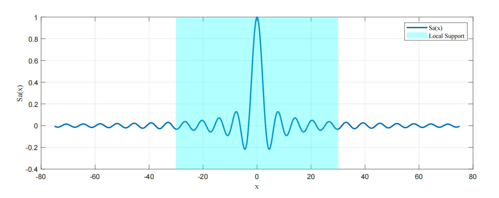
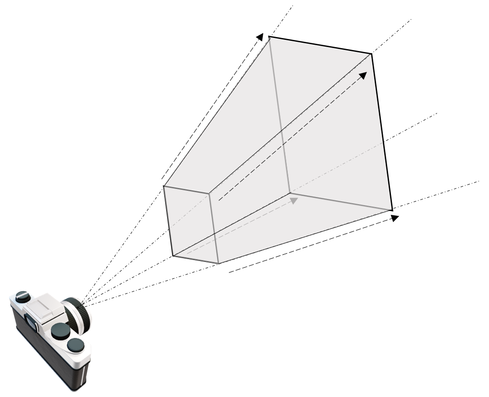
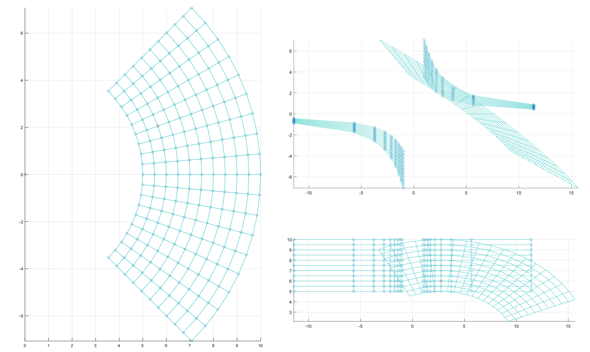

原文在此
此文记录个人学习过程，如有错误欢迎私信交流，十分感谢！（第一次在知乎发blog，紧张。）
3D Gaussian Splatting，简记为3DGS，是一种很有希望的场景表达方式。我在YouTube冲浪相关视频时，看到了这样一段评论：
“man i remember we learned the theory in the 90s... movement detection due to motion blur and calculate / recreate vectors and depths in a blackn white photo... but the computerpower was so limited we were not really able to proceed......... working on paper, lol, later volumetric clouds came in and now we have this.....this is truely awesome..... something i had dreamed of for decades, recreated my own 3d scenes for months, now its only a video and photos you put in an ai. i am totally flashed.”
我们很容易理解这个人的心境，毕竟硬件的发展带来了一个不可思议的时代。3DGS是一个非常厉害的技术，为了先有一个笼统的认知，我们可以简单将其概括为如下几步：
录一段视频或者拍一组不同角度的照片，用一些技术（例如SfM）估计点云。或者直接随机初始化一组点云。 点云中的每一个点，代表着一个三维的高斯分布，所以除了点的位置（均值）以外，还有协方差，以及不透明度，以及颜色（球谐系数）。直观可以理解为一个”椭球体“。 将这些椭球体沿着特定的角度投影到对应位姿所在的投影平面上，这一步也叫“splatting“，一个椭球体投影到平面上会得到一个椭圆（代码实现时其实是以长轴为直径的圆），然后通过计算待求解像素和椭圆中心的距离，我们可以得到不透明度（离的越近，说明越不透明）。每个椭球体又各自代表自己的颜色，这是距离无关的。于是就可以进行alpha compositing，来合成颜色。然后快速的对所有像素做这样的计算，这被称作”快速可微光栅化“。 于是可以得到整个图片，再和ground truth比较，得到损失，然后梯度反传，随机梯度下降，进行优化。
这是对3DGS工作流程最直观和通俗的解释，然而这会产生大量的疑问：”为什么非要是高斯分布？怎么在投影得到的椭圆（分布）上度量距离关于不透明度的分布？“等等，所以这篇blog会整理并推导一下3DGS里相关的数学概念，并不会涉及代码的解析。要了解事情的原委，最好的途径是切入那篇2001年TVCG上的论文EWA Splatting ，这里的EWA是Elliptical Weighted Average，其中Elliptical（椭圆）就有点“钦定”高斯的意思了。
首先，我们回忆一下体渲染的这个事情。假设读者跟我一样是从NeRF才接触体渲染的，那么回顾一下NeRF中，沿着一个像素，发出一条射线，然后这条射线“射向体数据”（在NeRF里就是沿着光线进行采样，然后查询采样点的属性）的过程。这个过程可以归结为一种 backward mapping 。
所以很自然的，会有一种 forward mapping 的办法。形式上，就是将整个“体数据”投影到此时位姿所对应的图像平面。这种办法的前提就不能是用NeRF那种隐式表达了，需要一些显式的表达才能支持这样直接的投影。例如以三个顶点长成的三角面基元（primitive），然后将这些许多的三角面直接投影到成像平面上，判断哪些像素是什么颜色，当有多个三角形投影时，根据他们的“深度”来判断前后顺序，然后进行熟悉的alpha compositing。当然也会有其他基元，例如小的平面表示等等。
无论是 backward mapping 还是 forward mapping ，这个过程都涉及到将连续的表示变成离散的。在 backward mapping 里，是对场进行采样；在 forward mapping 里，是需要直接生成出基元，这也是一种连续化为离散。为了理解在这个过程中，高斯分布为什么重要，我们需要牵扯到信号与系统中的概念。与混过数字信号处理考试不同的是，我们要清楚此时引入信号与系统里的工具的目的是什么。回想刚才三角面基元的情景，在实际情境中，我们其实都接触不到“连续”的表达，比如三角面，我们只会记录它的三个顶点。当投影完成后，我们只能做一些有限的操作来阻止“锯齿”，例如对结果进行一个模糊操作，这些操作一般都是局部的。我们这样做的目的，本质是“希望用离散的表达来重建原来的信号，进一步在重建好的信号上进行“resampling”。如果我们对处理后的结果，视觉上看起来没什么混叠或者锯齿上的问题，那就说明我们“resampling”是成功的。
Derivation of Sampling 我们回顾一些数字信号处理上的知识，可以在稍后帮助我们理解一些概念。考虑采样率f s = 1 / T f_s=1/T f s = 1 / T x a ( t ) x_a(t) x a ( t ) x ^ a ( t ) \hat{x}_a(t) x ^ a ( t )
x ^ a ( t ) = ∑ n = − ∞ ∞ x a ( t ) δ ( t − n T ) \hat{x}_a\left( t \right) =\sum_{n=-\infty}^{\infty}{x_a\left( t \right) \delta \left( t-nT \right)}\\
x ^ a ( t ) = n = − ∞ ∑ ∞ x a ( t ) δ ( t − n T )
我们知道，时域采样等价于频谱延拓，我们直接给出x ^ a ( t ) \hat{x}_a(t) x ^ a ( t ) X ^ a ( j Ω ) \hat{X}_a(j\varOmega) X ^ a ( j Ω )
X ^ a ( j Ω ) = 1 T ∑ n = − ∞ ∞ X a ( j Ω − j n 2 π T ) \hat{X}_a(j\varOmega )=\frac{1}{T}\sum_{n=-\infty}^{\infty}{X_a\left( j\varOmega -jn\frac{2\pi}{T} \right)}\\
X ^ a ( j Ω ) = T 1 n = − ∞ ∑ ∞ X a ( j Ω − j n T 2 π )
具体推导这里从略，这并不是我们关注的重点。感兴趣可以查看任何一本数字信号处理的教材。
考虑奈奎斯特采样定理，我们需要将x ^ a ( t ) \hat{x}_a(t) x ^ a ( t ) Ω s = 2 π / T = 2 π f s \varOmega_s=2\pi/T=2\pi f_s Ω s = 2 π / T = 2 π f s
G ( j Ω ) = { T s , ∣ Ω ∣ ⩽ Ω s / 2 0 , ∣ Ω ∣ > Ω s / 2 g ( t ) = S a ( Ω s 2 t ) = sin ( Ω s 2 t ) Ω s 2 t G\left( j\varOmega \right) =\left\{ \begin{array}{c} T_s, |\varOmega |\leqslant \varOmega _s/2\\ 0, |\varOmega |>\varOmega _s/2\\ \end{array} \right. \\ g\left( t \right) =\mathrm{Sa}\left( \frac{\varOmega _s}{2}t \right) =\frac{\sin \left( \frac{\varOmega _s}{2}t \right)}{\frac{\varOmega _s}{2}t}\\
G ( j Ω ) = { T s , ∣ Ω ∣ ⩽ Ω s / 2 0 , ∣ Ω ∣ > Ω s / 2 g ( t ) = S a ( 2 Ω s t ) = 2 Ω s t sin ( 2 Ω s t )
我们直接计算时域上卷积积分的结果，依然是不讲武德的交换积分和求和顺序：
y ( t ) = x ^ a ( t ) ∗ g ( t ) = ∫ − ∞ + ∞ [ ∑ n = − ∞ ∞ x a ( τ ) δ ( τ − n T ) ] g ( t − τ ) d τ = ∑ n = − ∞ ∞ ∫ − ∞ + ∞ x a ( τ ) g ( t − τ ) δ ( τ − n T ) d τ = ∑ n = − ∞ ∞ x a ( n T ) g ( t − n T ) = ∑ n = − ∞ ∞ x a ( n T ) sin ( π T t − n π ) ( π T t − n π ) y\left( t \right) =\hat{x}_a\left( t \right) \ast g\left( t \right) \\ =\int_{-\infty}^{+\infty}{\left[ \sum_{n=-\infty}^{\infty}{x_a\left( \tau \right) \delta \left( \tau -nT \right)} \right] g\left( t-\tau \right) \mathrm{d}\tau} \\ =\sum_{n=-\infty}^{\infty}{\int_{-\infty}^{+\infty}{x_a\left( \tau \right) g\left( t-\tau \right) \delta \left( \tau -nT \right)}\mathrm{d}\tau} \\ =\sum_{n=-\infty}^{\infty}{x_a\left( nT \right) g\left( t-nT \right)} \\ =\sum_{n=-\infty}^{\infty}{x_a\left( nT \right) \frac{\sin \left( \frac{\pi}{T}t-n\pi \right)}{\left( \frac{\pi}{T}t-n\pi \right)}}\\
y ( t ) = x ^ a ( t ) ∗ g ( t ) = ∫ − ∞ + ∞ [ n = − ∞ ∑ ∞ x a ( τ ) δ ( τ − n T ) ] g ( t − τ ) d τ = n = − ∞ ∑ ∞ ∫ − ∞ + ∞ x a ( τ ) g ( t − τ ) δ ( τ − n T ) d τ = n = − ∞ ∑ ∞ x a ( n T ) g ( t − n T ) = n = − ∞ ∑ ∞ x a ( n T ) ( T π t − n π ) sin ( T π t − n π )
在这篇blog的情境下，我们需要给最后的式子里的sin ( π T t − n π ) ( π T t − n π ) \frac{\sin \left( \frac{\pi}{T}t-n\pi \right)}{\left( \frac{\pi}{T}t-n\pi \right)} ( T π t − n π ) s i n ( T π t − n π ) y ( t ) y(t) y ( t )

在复习了采样定理和插值后，我们继续回到EWA splatting的框架里。为了方便（如果有）读者和原文对照，这里沿用原文的符号标记。EWA里将要处理的整个图形模型看作对一个连续函数进行不规则的采样的结果，这是一个很自然的假设，例如3DGS里的点云，传统的三角面片表示，NeRF的渲染过程，确实是采样的结果。我们可以像前面推导理想情况下的插值函数一样，用一个重建核来重建这个连续函数f c ( u ) f_c(\mathbf{u}) f c ( u )
f c ( u ) = ∑ k ∈ I N w k r k ( u ) f_c\left( \mathbf{u} \right) =\sum_{k\in \mathbb{I} \mathbb{N}}{w_kr_k\left( \mathbf{u} \right)}\\
f c ( u ) = k ∈ I N ∑ w k r k ( u )
这里u \mathbf{u} u w k w_k w k r k ( ⋅ ) r_k(\cdot) r k ( ⋅ ) I N \mathbb{I} \mathbb{N} I N f c ( ⋅ ) f_c(\cdot) f c ( ⋅ ) g c ( x ) g_c(\mathbf{x}) g c ( x )
g c ( x ) = { P ( f c ) } ( x ) g_c\left( \mathbf{x} \right) =\left\{ \mathcal{P} \left( f_c \right) \right\} \left( \mathbf{x} \right)\\
g c ( x ) = { P ( f c ) } ( x )
这里P \mathcal{P} P x \mathbf{x} x
g c ( x ) = ∑ k ∈ I N w k p k ( u ) g_c\left( \mathbf{x} \right) =\sum_{k\in \mathbb{I} \mathbb{N}}{w_kp_k\left( \mathbf{u} \right)}\\
g c ( x ) = k ∈ I N ∑ w k p k ( u )
这里p k ( ⋅ ) = P ( r k ( ⋅ ) ) p_k(\cdot)=\mathcal{P}(r_k(\cdot)) p k ( ⋅ ) = P ( r k ( ⋅ ) ) h ( x ) h(\mathbf{x}) h ( x )
g c ′ ( x ) = g c ( x ) ⊗ h ( x ) g_{c}^{\prime}\left( \mathbf{x} \right) =g_c\left( \mathbf{x} \right) \otimes h\left( \mathbf{x} \right)\\
g c ′ ( x ) = g c ( x ) ⊗ h ( x )
（这里的上角标处的撇跟求导没有任何关系，可能是2001年的时候科技论文里的符号都采取的有些奔放吧。）如果展开卷积式子，将加权时的求和符号与卷积的积分符号交换位置，可以发现：
g c ′ ( x ) = ∫ I R 2 { P ( ∑ k ∈ I N w k r k ) } ( η ) h ( x − η ) d η = ∑ k ∈ I N w k ∫ I R 2 p k ( η ) h ( x − η ) d η = ∑ k ∈ I N w k ρ k ( x ) g_{c}^{\prime}\left( \mathbf{x} \right) =\int_{\mathbb{I} \mathbb{R} ^2}{\left\{ \mathcal{P} \left( \sum_{k\in \mathbb{I} \mathbb{N}}{w_kr_k} \right) \right\} \left( \boldsymbol{\eta } \right) h\left( \mathbf{x}-\boldsymbol{\eta } \right) \mathrm{d}\boldsymbol{\eta }} \\ =\sum_{k\in \mathbb{I} \mathbb{N}}{w_k\int_{\mathbb{I} \mathbb{R} ^2}{p_k\left( \boldsymbol{\eta } \right) h\left( \mathbf{x}-\boldsymbol{\eta } \right) \mathrm{d}\boldsymbol{\eta }}} \\ =\sum_{k\in \mathbb{I} \mathbb{N}}{w_k\rho _k\left( \mathbf{x} \right)}\\
g c ′ ( x ) = ∫ I R 2 { P ( k ∈ I N ∑ w k r k ) } ( η ) h ( x − η ) d η = k ∈ I N ∑ w k ∫ I R 2 p k ( η ) h ( x − η ) d η = k ∈ I N ∑ w k ρ k ( x )
这里ρ k ( x ) = ( p k ⊗ h ) ( x ) \rho _k\left( \mathbf{x} \right) =\left( p_k\otimes h \right) \left( \mathbf{x} \right) ρ k ( x ) = ( p k ⊗ h ) ( x ) p k ( ⋅ ) p_k(\cdot) p k ( ⋅ ) 对采样后整个场景的操作，都可以归结为对重建核进行操作。
Derivation of Splatting 接下来我们需要将上面构造的这三步操作，结合到体渲染的具体情景中。接下来我们会看到一段很类似于NeRF里所用到的推导，但与NeRF不同的是，这里涉及的变换会略微复杂。如果我们回忆NeRF中单纯的渲染过程，不考虑NeRF中的NDC transformation，那整个NeRF的框架里就只有这一个旋转变换和平移变换。一个矩阵就够了。后面我们会发现，在这里我们需要两个矩阵。
然而如上面所说，splatting的过程是反过来的，我们希望将物体投影到平面上。第一步我们仍然将源空间（世界坐标系）下的坐标转换到相机空间里，这是一步仿射变换。然后，与其计算相机空间里的每个基元关于平面的投影，然后计算哪些部分属于哪些像素，不如直接应用一个投影变换，将从相机原点发射的光线，映射为平行光。这样，被变换后的坐标，就可以很方便的进行体渲染了。变换后得到的空间我们称为“光线空间”。这个投影变换并不显然，因为如果直接这么应用一个投影变换，会带来一些问题，我们放在后面讨论。我们将从源空间映射到相机空间的仿射变换记作φ ( ⋅ ) \varphi(\cdot) φ ( ⋅ ) ϕ ( ⋅ ) \phi(\cdot) ϕ ( ⋅ )
接下来，我们从体渲染的公式出发，推导出通常意义下的splatting算法。在EWA splatting这篇里，所用的体渲染公式和NeRF里的相比，说法上更加严谨，是传统意义上的体渲染公式的写法——“low albedo approximation”，即低反照近似，大概是指得这个式子本身不考虑颜色随角度变化，于是不怎么拟合那种non-Lambertian的东西。但数学形式上是完全一样的。下面这一部分的内容其实有两个目的， 一个是给出splatting框架下做体渲染的方法，另一个是将刚才“连续-离散”的框架在这个例子里“实例化”。
这里，EWA splatting的作者为了后面的一个方便（将3D积分掉一维变成2D）以及“光线空间”的引入，修改了一下符号意义。对于 光线空间 里的坐标x = ( x 0 , x 1 , x 2 ) T \mathbf{x}=(x_0,x_1,x_2)^T x = ( x 0 , x 1 , x 2 ) T x 2 x_2 x 2 ( x , x 2 ) T (\mathbf{x},x_2)^T ( x , x 2 ) T
所以此时体渲染的方程为：
I ( x ) = ∫ 0 L c ( x , ξ ) f c ′ ( x , ξ ) e − ∫ 0 ξ f c ′ ( x , μ ) d μ d ξ I\left( \mathbf{x} \right) =\int_0^L{c\left( \mathbf{x},\xi \right) f_{c}^{\prime}\left( \mathbf{x},\xi \right) e^{-\int_0^{\xi}{f_{c}^{\prime}\left( \mathbf{x},\mu \right) \mathrm{d}\mu}}\mathrm{d}\xi}\\
I ( x ) = ∫ 0 L c ( x , ξ ) f c ′ ( x , ξ ) e − ∫ 0 ξ f c ′ ( x , μ ) d μ d ξ
I λ ( ⋅ ) I_{\lambda}(\cdot) I λ ( ⋅ ) f c ′ ( x , ξ ) f_{c}^{\prime}\left( \mathbf{x},\xi \right) f c ′ ( x , ξ ) c ( x , ξ ) c\left( \mathbf{x},\xi \right) c ( x , ξ )
其实我们如果熟悉NeRF的推导，结合前面的那些框架，其实我们很容易猜出来下面就是把I ( x ) I(\mathbf{x}) I ( x )
由于我们将源空间到相机空间记作φ ( ⋅ ) \varphi(\cdot) φ ( ⋅ ) ϕ ( ⋅ ) \phi(\cdot) ϕ ( ⋅ ) f c ( u ) f_c(\mathbf{u}) f c ( u ) x \mathbf{x} x x \mathbf{x} x f c ( u ) f_c(\mathbf{u}) f c ( u )
f c ′ ( x ) = f c ( φ − 1 ( ϕ − 1 ( x ) ) ) = ∑ k ∈ I N w k r k ′ ( x ) f_{c}^{\prime}\left( \mathbf{x} \right) =f_c\left( \varphi ^{-1}\left( \phi ^{-1}\left( \mathbf{x} \right) \right) \right) =\sum_{k\in \mathbb{I} \mathbb{N}}{w_kr_{k}^{\prime}\left( \mathbf{x} \right)}\\
f c ′ ( x ) = f c ( φ − 1 ( ϕ − 1 ( x ) ) ) = k ∈ I N ∑ w k r k ′ ( x )
很直接的，变换的作用可以直接吸收进重建核中。如果我们选择高斯分布作为重建核，至少，如果对高斯分布进行简单的旋转，平移，缩放，那么它就还是高斯分布。可是变换ϕ − 1 ( ⋅ ) \phi^{-1}(\cdot) ϕ − 1 ( ⋅ ) f c ′ ( x ) f_{c}^{\prime}\left( \mathbf{x} \right) f c ′ ( x )
I ( x ) = ∫ 0 L c ( x , ξ ) ∑ k ∈ I N w k r k ′ ( x , ξ ) e − ∫ 0 ξ ∑ j ∈ I N w j r j ′ ( x , μ ) d μ d ξ = ∑ k ∈ I N w k ( ∫ 0 L c ( x , ξ ) r k ′ ( x , ξ ) e − ∑ j ∈ I N w j ∫ 0 ξ r j ′ ( x , μ ) d μ d ξ ) = ∑ k ∈ I N w k ( ∫ 0 L c ( x , ξ ) r k ′ ( x , ξ ) ∏ j e − w j ∫ 0 ξ r j ′ ( x , μ ) d μ d ξ ) I\left( \mathbf{x} \right) =\int_0^L{c\left( \mathbf{x},\xi \right) \sum_{k\in \mathbb{I} \mathbb{N}}{w_kr_{k}^{\prime}\left( \mathbf{x},\xi \right)}e^{-\int_0^{\xi}{\sum_{j\in \mathbb{I} \mathbb{N}}{w_jr_{j}^{\prime}\left( \mathbf{x},\mu \right)}\mathrm{d}\mu}}\mathrm{d}\xi} \\ =\sum_{k\in \mathbb{I} \mathbb{N}}{w_k\left( \int_0^L{c\left( \mathbf{x},\xi \right) r_{k}^{\prime}\left( \mathbf{x},\xi \right) e^{-\sum_{j\in \mathbb{I} \mathbb{N}}{w_j\int_0^{\xi}{r_{j}^{\prime}\left( \mathbf{x},\mu \right)}\mathrm{d}\mu}}\mathrm{d}\xi} \right)} \\ =\sum_{k\in \mathbb{I} \mathbb{N}}{w_k\left( \int_0^L{c\left( \mathbf{x},\xi \right) r_{k}^{\prime}\left( \mathbf{x},\xi \right) \prod_j{e^{-w_j\int_0^{\xi}{r_{j}^{\prime}\left( \mathbf{x},\mu \right)}\mathrm{d}\mu}}\mathrm{d}\xi} \right)}\\
I ( x ) = ∫ 0 L c ( x , ξ ) k ∈ I N ∑ w k r k ′ ( x , ξ ) e − ∫ 0 ξ ∑ j ∈ I N w j r j ′ ( x , μ ) d μ d ξ = k ∈ I N ∑ w k ( ∫ 0 L c ( x , ξ ) r k ′ ( x , ξ ) e − ∑ j ∈ I N w j ∫ 0 ξ r j ′ ( x , μ ) d μ d ξ ) = k ∈ I N ∑ w k ( ∫ 0 L c ( x , ξ ) r k ′ ( x , ξ ) j ∏ e − w j ∫ 0 ξ r j ′ ( x , μ ) d μ d ξ )
此时I ( x ) I(\mathbf{x}) I ( x ) I ( x ) I(\mathbf{x}) I ( x ) g c ( x ) g_c(\mathbf{x}) g c ( x ) g c ( x ) g_c(\mathbf{x}) g c ( x ) I ( x ) I(\mathbf{x}) I ( x ) 局部支撑 的（联想Sa/Sinc函数）。那样的话我们可以认为在积分从0到L的过程中，只有那些r k ′ ( x , ξ ) r_{k}^{\prime}\left( \mathbf{x},\xi \right) r k ′ ( x , ξ ) k k k r k ′ ( x , ξ ) r_{k}^{\prime}\left( \mathbf{x},\xi \right) r k ′ ( x , ξ ) c ( x , ξ ) c\left( \mathbf{x},\xi \right) c ( x , ξ ) c ( x , ξ ) c\left( \mathbf{x},\xi \right) c ( x , ξ ) e − x ≈ 1 − x e^{-x}\approx1-x e − x ≈ 1 − x
g c ( x ) = ∑ k ∈ I N w k c ( x ) ( ∫ 0 L r k ′ ( x , ξ ) ∏ j ( 1 − w j ∫ 0 ξ r j ′ ( x , μ ) d μ ) d ξ ) g_c\left( \mathbf{x} \right) =\sum_{k\in \mathbb{I} \mathbb{N}}{w_kc\left( \mathbf{x} \right) \left( \int_0^L{r_{k}^{\prime}\left( \mathbf{x},\xi \right) \prod_j{\left( 1-w_j\int_0^{\xi}{r_{j}^{\prime}\left( \mathbf{x},\mu \right)}\mathrm{d}\mu \right)}\mathrm{d}\xi} \right)}\\
g c ( x ) = k ∈ I N ∑ w k c ( x ) ( ∫ 0 L r k ′ ( x , ξ ) j ∏ ( 1 − w j ∫ 0 ξ r j ′ ( x , μ ) d μ ) d ξ )
接下来，为了对齐连乘符号内外的积分，会引入一个“ignore self-occlusion”的假设。这个假设说的是不那么细致的考虑每个基元内部的不透明度（opacity）的变化，直接将穿透整个基元后所消耗的那么多为最小单位。所以公式上就是将连乘符号内部的那个积分的积分上限调整成L L L
g c ( x ) = ∑ k ∈ I N w k c ( x ) ( ∫ 0 L r k ′ ( x , ξ ) ∏ j ( 1 − w j ∫ 0 L r j ′ ( x , μ ) d μ ) d ξ ) = ∑ k ∈ I N w k c ( x ) ( ∫ 0 L r k ′ ( x , ξ ) d ξ ) ∏ j ( 1 − w j ∫ 0 L r j ′ ( x , μ ) d μ ) g_c\left( \mathbf{x} \right) =\sum_{k\in \mathbb{I} \mathbb{N}}{w_kc\left( \mathbf{x} \right) \left( \int_0^L{r_{k}^{\prime}\left( \mathbf{x},\xi \right) \prod_j{\left( 1-w_j\int_0^L{r_{j}^{\prime}\left( \mathbf{x},\mu \right)}\mathrm{d}\mu \right)}\mathrm{d}\xi} \right)} \\ =\sum_{k\in \mathbb{I} \mathbb{N}}{w_kc\left( \mathbf{x} \right) \left( \int_0^L{r_{k}^{\prime}\left( \mathbf{x},\xi \right) \mathrm{d}\xi} \right) \prod_j{\left( 1-w_j\int_0^L{r_{j}^{\prime}\left( \mathbf{x},\mu \right)}\mathrm{d}\mu \right)}}\\
g c ( x ) = k ∈ I N ∑ w k c ( x ) ( ∫ 0 L r k ′ ( x , ξ ) j ∏ ( 1 − w j ∫ 0 L r j ′ ( x , μ ) d μ ) d ξ ) = k ∈ I N ∑ w k c ( x ) ( ∫ 0 L r k ′ ( x , ξ ) d ξ ) j ∏ ( 1 − w j ∫ 0 L r j ′ ( x , μ ) d μ )
在此基础上，再记：
q k ( x ) = ∫ I R r k ′ ( x , ξ ) d ξ q_k\left( \mathbf{x} \right) =\int_{\mathbb{I} \mathbb{R}}{r_{k}^{\prime}\left( \mathbf{x},\xi \right) \mathrm{d}\xi}\\
q k ( x ) = ∫ I R r k ′ ( x , ξ ) d ξ
此时，这里的q k ( x ) q_k\left( \mathbf{x} \right) q k ( x ) q k ( x ) q_k\left( \mathbf{x} \right) q k ( x ) g c ( x ) g_c(\mathbf{x}) g c ( x )
g c ( x ) = ∑ k ∈ I N w k c ( x ) q k ( x ) ∏ j = 0 k − 1 ( 1 − w j q j ( x ) ) g_c\left( \mathbf{x} \right) =\sum_{k\in \mathbb{I} \mathbb{N}}{w_kc\left( \mathbf{x} \right) q_k\left( \mathbf{x} \right) \prod_{j=0}^{k-1}{\left( 1-w_jq_j\left( \mathbf{x} \right) \right)}}\\
g c ( x ) = k ∈ I N ∑ w k c ( x ) q k ( x ) j = 0 ∏ k − 1 ( 1 − w j q j ( x ) )
此时的g c ( x ) g_c(\mathbf{x}) g c ( x ) g c ( x ) = ∑ k ∈ I N w k p k ( u ) g_c\left( \mathbf{x} \right) =\sum_{k\in \mathbb{I} \mathbb{N}}{w_kp_k\left( \mathbf{u} \right)} g c ( x ) = ∑ k ∈ I N w k p k ( u ) w k w_k w k x \mathbf{x} x g c ′ ( x ) = g c ( x ) ⊗ h ( x ) g_{c}^{\prime}\left( \mathbf{x} \right) =g_c\left( \mathbf{x} \right) \otimes h\left( \mathbf{x} \right) g c ′ ( x ) = g c ( x ) ⊗ h ( x ) g c ′ ( x ) g_{c}^{\prime}\left( \mathbf{x} \right) g c ′ ( x ) h ( x ) h(\mathbf{x}) h ( x ) q k ( x ) q_k(\mathbf{x}) q k ( x )
g c ′ ( x ) = g c ( x ) ⊗ h ( x ) = ∑ k w k ∫ I R 2 c k ( η ) q k ( η ) ∏ j = 0 k − 1 ( 1 − w j q j ( η ) ) h ( x − η ) d η g_{c}^{\prime}\left( \mathbf{x} \right) =g_c\left( \mathbf{x} \right) \otimes h\left( \mathbf{x} \right) \\ =\sum_k{w_k\int_{\mathbb{I} \mathbb{R} ^2}{c_k\left( \eta \right) q_k\left( \eta \right) \prod_{j=0}^{k-1}{\left( 1-w_jq_j\left( \eta \right) \right)}h\left( \mathbf{x}-\eta \right) \mathrm{d}\eta}}\\
g c ′ ( x ) = g c ( x ) ⊗ h ( x ) = k ∑ w k ∫ I R 2 c k ( η ) q k ( η ) j = 0 ∏ k − 1 ( 1 − w j q j ( η ) ) h ( x − η ) d η
想达成上面那个目的，需要把c k ( ⋅ ) c_k(\cdot) c k ( ⋅ ) c k ( x ) c_k(\mathbf{x}) c k ( x )
∏ j = 0 k − 1 ( 1 − w j q j ( x ) ) ≈ o k g c ( x ) ⊗ h ( x ) = ∑ k w k c k o k ∫ I R 2 q k ( η ) h ( x − η ) d η = ∑ k w k c k o k ( q k ( x ) ⊗ h ( x ) ) = ∑ k w k c k o k ρ k ( x ) \prod_{j=0}^{k-1}{\left( 1-w_jq_j\left( \mathbf{x} \right) \right)}\approx o_k \\ g_c\left( \mathbf{x} \right) \otimes h\left( \mathbf{x} \right) =\sum_k{w_kc_ko_k\int_{\mathbb{I} \mathbb{R} ^2}{q_k\left( \eta \right) h\left( \mathbf{x}-\eta \right) \mathrm{d}\eta}} \\ =\sum_k{w_kc_ko_k\left( q_k\left( \mathbf{x} \right) \otimes h\left( \mathbf{x} \right) \right)} \\ =\sum_k{w_kc_ko_k\rho _k\left( \mathbf{x} \right)}\\
j = 0 ∏ k − 1 ( 1 − w j q j ( x ) ) ≈ o k g c ( x ) ⊗ h ( x ) = k ∑ w k c k o k ∫ I R 2 q k ( η ) h ( x − η ) d η = k ∑ w k c k o k ( q k ( x ) ⊗ h ( x ) ) = k ∑ w k c k o k ρ k ( x )
经过两次关于c k ( ⋅ ) c_k(\cdot) c k ( ⋅ ) k k k
Derivation of Gaussian 到现在为止，从上述的步骤中，我们是可以觉察到，我们想要的重建核函数，如果有特定的形式，会带来很多方便。假如这个重建核函数和预滤波器作卷积（当然预滤波器也是我们可以选择的）后仍然有和原来一样的表达，假如这个重建核函数经过线性变换后，其函数参数也可以被线性的变化，假如这个重建函数，沿某个维度积分后，也能保持类似的函数结构，那不就是一个天大的好事？
“神说要有高斯函数，于是就有了高斯函数。“
高斯函数可以符合上述性质，我们这里整理一下关于高斯函数的一些神奇的性质。为了和这里的情境更适配，我们将高斯分布里的μ \mathbf{\mu } μ p \mathbf{p} p Σ \mathbf{\Sigma } Σ p \mathbf{p} p n n n G p , Σ ( n ) ( x ) \mathcal{G} _{\mathbf{p},\mathbf{\Sigma }}^{\left( n \right)}\left( \mathbf{x} \right) G p , Σ ( n ) ( x )
G p , Σ ( n ) ( x ) = 1 ( 2 π ) n 2 ∣ Σ ∣ 1 2 e − 1 2 ( x − p ) T Σ − 1 ( x − p ) \mathcal{G} _{\mathbf{p},\mathbf{\Sigma }}^{\left( n \right)}\left( \mathbf{x} \right) =\frac{1}{\left( 2\pi \right) ^{\frac{n}{2}}\left| \mathbf{\Sigma } \right|^{\frac{1}{2}}}e^{-\frac{1}{2}\left( \mathbf{x}-\mathbf{p} \right) ^T\mathbf{\Sigma }^{-1}\left( \mathbf{x}-\mathbf{p} \right)}\\
G p , Σ ( n ) ( x ) = ( 2 π ) 2 n ∣ Σ ∣ 2 1 1 e − 2 1 ( x − p ) T Σ − 1 ( x − p )
首先，我们应注意到Σ \mathbf{\Sigma } Σ
Σ = Q T Λ Q \mathbf{\Sigma }=\mathbf{Q}^T\mathbf{\Lambda Q}\\
Σ = Q T Λ Q
由于它半正定，所以表示特征值的对角阵Λ \mathbf{\Lambda} Λ Λ 1 2 Λ 1 2 \mathbf{\Lambda}^{\frac{1}{2}}\mathbf{\Lambda}^{\frac{1}{2}} Λ 2 1 Λ 2 1 Σ \mathbf{\Sigma } Σ
Σ = Q T Λ 1 2 ⏟ σ Λ 1 2 Q ⏟ σ T = σ σ T \mathbf{\Sigma }=\underset{\mathbf{\sigma }}{\underbrace{\mathbf{Q}^T\mathbf{\Lambda }^{\frac{1}{2}}}}\underset{\mathbf{\sigma }^T}{\underbrace{\mathbf{\Lambda }^{\frac{1}{2}}\mathbf{Q}}} \\ =\mathbf{\sigma \sigma }^T\\
Σ = σ Q T Λ 2 1 σ T Λ 2 1 Q = σ σ T
于是Σ − 1 = ( σ T ) − 1 σ − 1 \mathbf{\Sigma }^{-1}=\left( \mathbf{\sigma }^T \right) ^{-1}\mathbf{\sigma }^{-1} Σ − 1 = ( σ T ) − 1 σ − 1 A A A ( A A − 1 ) T = ( A − 1 ) T A T = I \left( AA^{-1} \right) ^T=\left( A^{-1} \right) ^TA^T=I ( A A − 1 ) T = ( A − 1 ) T A T = I ( A T ) − 1 = ( A − 1 ) T \left( A^T \right) ^{-1}=\left( A^{-1} \right) ^T ( A T ) − 1 = ( A − 1 ) T Σ − 1 \mathbf{\Sigma }^{-1} Σ − 1 Σ − 1 = σ − T σ − 1 \mathbf{\Sigma }^{-1}=\mathbf{\sigma }^{-T}\mathbf{\sigma }^{-1} Σ − 1 = σ − T σ − 1
“高斯函数的傅里叶变换还是高斯函数”
接下来，我们先计算n n n
F [ G p , Σ ( n ) ( x ) ] = 1 ( 2 π ) n 2 ∣ Σ ∣ 1 2 ∫ − ∞ + ∞ e − 1 2 ( x − p ) T Σ − 1 ( x − p ) e − j x T ω d x = 1 ( 2 π ) n 2 ∣ Σ ∣ 1 2 ∫ − ∞ + ∞ e − 1 2 ( x − p ) T σ − T σ − 1 ( x − p ) e − j x T ω d x \mathcal{F} \left[\mathcal{G} _{\mathbf{p},\mathbf{\Sigma }}^{\left( n \right)}\left( \mathbf{x} \right) \right] =\frac{1}{\left( 2\pi \right) ^{\frac{n}{2}}\left| \mathbf{\Sigma } \right|^{\frac{1}{2}}}\int_{-\infty}^{+\infty}{e^{-\frac{1}{2}\left( \mathbf{x}-\mathbf{p} \right) ^T\mathbf{\Sigma }^{-1}\left( \mathbf{x}-\mathbf{p} \right)}e^{-j\mathbf{x}^T\boldsymbol{\omega }}\mathrm{d}\mathbf{x}} \\ =\frac{1}{\left( 2\pi \right) ^{\frac{n}{2}}\left| \mathbf{\Sigma } \right|^{\frac{1}{2}}}\int_{-\infty}^{+\infty}{e^{-\frac{1}{2}\left( \mathbf{x}-\mathbf{p} \right) ^T\mathbf{\sigma }^{-T}\mathbf{\sigma }^{-1}\left( \mathbf{x}-\mathbf{p} \right)}e^{-j\mathbf{x}^T\boldsymbol{\omega }}\mathrm{d}\mathbf{x}}\\
F [ G p , Σ ( n ) ( x ) ] = ( 2 π ) 2 n ∣ Σ ∣ 2 1 1 ∫ − ∞ + ∞ e − 2 1 ( x − p ) T Σ − 1 ( x − p ) e − j x T ω d x = ( 2 π ) 2 n ∣ Σ ∣ 2 1 1 ∫ − ∞ + ∞ e − 2 1 ( x − p ) T σ − T σ − 1 ( x − p ) e − j x T ω d x
作换元z = σ − 1 ( x − p ) \mathbf{z}=\mathbf{\sigma }^{-1}\left( \mathbf{x}-\mathbf{p} \right) z = σ − 1 ( x − p ) x = σ z + p \mathbf{x}=\mathbf{\sigma z}+\mathbf{p} x = σ z + p
= 1 ( 2 π ) n 2 ∣ Σ ∣ 1 2 ∫ − ∞ + ∞ e − 1 2 z T z e − j ( z T σ T + p T ) ω d x = 1 ( 2 π ) n 2 ∣ Σ ∣ 1 2 e − j p T ω ∫ − ∞ + ∞ e − 1 2 z T z e − j z T σ T ω d x =\frac{1}{\left( 2\pi \right) ^{\frac{n}{2}}\left| \mathbf{\Sigma } \right|^{\frac{1}{2}}}\int_{-\infty}^{+\infty}{e^{-\frac{1}{2}\mathbf{z}^T\mathbf{z}}e^{-j\left( \mathbf{z}^T\mathbf{\sigma }^T+\mathbf{p}^T \right) \boldsymbol{\omega }}\mathrm{d}\mathbf{x}} \\ =\frac{1}{\left( 2\pi \right) ^{\frac{n}{2}}\left| \mathbf{\Sigma } \right|^{\frac{1}{2}}}e^{-j\mathbf{p}^T\boldsymbol{\omega }}\int_{-\infty}^{+\infty}{e^{-\frac{1}{2}\mathbf{z}^T\mathbf{z}}e^{-j\mathbf{z}^T\mathbf{\sigma }^T\boldsymbol{\omega }}\mathrm{d}\mathbf{x}}\\
= ( 2 π ) 2 n ∣ Σ ∣ 2 1 1 ∫ − ∞ + ∞ e − 2 1 z T z e − j ( z T σ T + p T ) ω d x = ( 2 π ) 2 n ∣ Σ ∣ 2 1 1 e − j p T ω ∫ − ∞ + ∞ e − 2 1 z T z e − j z T σ T ω d x
注意到：
− 1 2 ( z + j σ T ω ) T ( z + j σ T ω ) − 1 2 ω T σ T σ ω = − 1 2 ( z T z + j z T σ T ω + j ω T σ z ⏟ s c a l a r − ω T σ σ T ω ) − 1 2 ω T σ T σ ω = − 1 2 z T z − j z T σ T ω + 1 2 ω T σ T σ ω − 1 2 ω T σ T σ ω = − 1 2 z T z − j z T σ T ω -\frac{1}{2}\left( \mathbf{z}+j\mathbf{\sigma }^T\boldsymbol{\omega } \right) ^T\left( \mathbf{z}+j\mathbf{\sigma }^T\boldsymbol{\omega } \right) -\frac{1}{2}\boldsymbol{\omega }^T\mathbf{\sigma }^T\mathbf{\sigma }\boldsymbol{\omega } \\ =-\frac{1}{2}\left( \mathbf{z}^T\mathbf{z}+\underset{\mathrm{scalar}}{\underbrace{j\mathbf{z}^T\mathbf{\sigma }^T\boldsymbol{\omega }+j\boldsymbol{\omega }^T\mathbf{\sigma z}}}-\boldsymbol{\omega }^T\mathbf{\sigma \sigma }^T\boldsymbol{\omega } \right) -\frac{1}{2}\boldsymbol{\omega }^T\mathbf{\sigma }^T\mathbf{\sigma }\boldsymbol{\omega } \\ =-\frac{1}{2}\mathbf{z}^T\mathbf{z}-j\mathbf{z}^T\mathbf{\sigma }^T\boldsymbol{\omega }+\frac{1}{2}\boldsymbol{\omega }^T\mathbf{\sigma }^T\mathbf{\sigma }\boldsymbol{\omega }-\frac{1}{2}\boldsymbol{\omega }^T\mathbf{\sigma }^T\mathbf{\sigma }\boldsymbol{\omega } \\ =-\frac{1}{2}\mathbf{z}^T\mathbf{z}-j\mathbf{z}^T\mathbf{\sigma }^T\boldsymbol{\omega }\\
− 2 1 ( z + j σ T ω ) T ( z + j σ T ω ) − 2 1 ω T σ T σ ω = − 2 1 ⎝ ⎜ ⎛ z T z + s c a l a r j z T σ T ω + j ω T σ z − ω T σ σ T ω ⎠ ⎟ ⎞ − 2 1 ω T σ T σ ω = − 2 1 z T z − j z T σ T ω + 2 1 ω T σ T σ ω − 2 1 ω T σ T σ ω = − 2 1 z T z − j z T σ T ω
所以积分里的指数项可以化为：
= 1 ( 2 π ) n 2 ∣ Σ ∣ 1 2 e − j p T ω e − 1 2 ω T σ T σ ω ∫ − ∞ + ∞ e − 1 2 ( z + j σ T ω ) T ( z + j σ T ω ) d x =\frac{1}{\left( 2\pi \right) ^{\frac{n}{2}}\left| \mathbf{\Sigma } \right|^{\frac{1}{2}}}e^{-j\mathbf{p}^T\boldsymbol{\omega }}e^{-\frac{1}{2}\boldsymbol{\omega }^T\mathbf{\sigma }^T\mathbf{\sigma }\boldsymbol{\omega }}\int_{-\infty}^{+\infty}{e^{-\frac{1}{2}\left( \mathbf{z}+j\mathbf{\sigma }^T\boldsymbol{\omega } \right) ^T\left( \mathbf{z}+j\mathbf{\sigma }^T\boldsymbol{\omega } \right)}\mathrm{d}\mathbf{x}}\\
= ( 2 π ) 2 n ∣ Σ ∣ 2 1 1 e − j p T ω e − 2 1 ω T σ T σ ω ∫ − ∞ + ∞ e − 2 1 ( z + j σ T ω ) T ( z + j σ T ω ) d x
由重积分里的换元法，我们知道σ \mathbf{\sigma} σ x \mathbf{x} x z \mathbf{z} z d x = ∣ σ ∣ d z = ∣ Σ ∣ 1 2 d z \mathrm{d}\mathbf{x}=\left| \mathbf{\sigma } \right|\mathrm{d}\mathbf{z}=\left| \mathbf{\Sigma } \right|^{\frac{1}{2}}\mathrm{d}\mathbf{z} d x = ∣ σ ∣ d z = ∣ Σ ∣ 2 1 d z
= 1 ( 2 π ) n 2 e − j p T ω e − 1 2 ω T σ T σ ω ∫ − ∞ + ∞ e − 1 2 ( z + j σ T ω ) T ( z + j σ T ω ) d z =\frac{1}{\left( 2\pi \right) ^{\frac{n}{2}}}e^{-j\mathbf{p}^T\boldsymbol{\omega }}e^{-\frac{1}{2}\boldsymbol{\omega }^T\mathbf{\sigma }^T\mathbf{\sigma }\boldsymbol{\omega }}\int_{-\infty}^{+\infty}{e^{-\frac{1}{2}\left( \mathbf{z}+j\mathbf{\sigma }^T\boldsymbol{\omega } \right) ^T\left( \mathbf{z}+j\mathbf{\sigma }^T\boldsymbol{\omega } \right)}\mathrm{d}\mathbf{z}}\\
= ( 2 π ) 2 n 1 e − j p T ω e − 2 1 ω T σ T σ ω ∫ − ∞ + ∞ e − 2 1 ( z + j σ T ω ) T ( z + j σ T ω ) d z
进一步，令y = z + j σ T ω \mathbf{y}=\mathbf{z}+j\mathbf{\sigma }^T\boldsymbol{\omega } y = z + j σ T ω
= 1 ( 2 π ) n 2 e − j p T ω e − 1 2 ω T σ T σ ω ∫ − ∞ + ∞ e − 1 2 y T y d y =\frac{1}{\left( 2\pi \right) ^{\frac{n}{2}}}e^{-j\mathbf{p}^T\boldsymbol{\omega }}e^{-\frac{1}{2}\boldsymbol{\omega }^T\mathbf{\sigma }^T\mathbf{\sigma }\boldsymbol{\omega }}\int_{-\infty}^{+\infty}{e^{-\frac{1}{2}\mathbf{y}^T\mathbf{y}}\mathrm{d}\mathbf{y}}\\
= ( 2 π ) 2 n 1 e − j p T ω e − 2 1 ω T σ T σ ω ∫ − ∞ + ∞ e − 2 1 y T y d y
那一项反常积分非常出名，我们在高数课上接触过它在一维，二维上的情况，我们知道：
∫ − ∞ + ∞ e − x 2 d x = π \int_{-\infty}^{+\infty}{e^{-x^2}\mathrm{d}x}=\sqrt{\pi}\\
∫ − ∞ + ∞ e − x 2 d x = π
由换元法x = t 2 x=\frac{t}{\sqrt{2}} x = 2 t
∫ − ∞ + ∞ e − t 2 2 d t = 2 π \int_{-\infty}^{+\infty}{e^{-\frac{t^2}{2}}\mathrm{d}t}=\sqrt{2\pi}\\
∫ − ∞ + ∞ e − 2 t 2 d t = 2 π
n n n
∫ ⋯ ∫ − ∞ + ∞ e − 1 2 ( y 1 2 + y 2 2 + . . . + y n 2 ) d y 1 d y 2 . . . d y n = ( 2 π ) n \int\dotsi\int_{-\infty}^{+\infty}{e^{-\frac{1}{2}\left( y_{1}^{2}+y_{2}^{2}+...+y_{n}^{2} \right)}\mathrm{d}y_1\mathrm{d}y_2...\mathrm{d}y_n}=\left( \sqrt{2\pi} \right) ^n\\
∫ ⋯ ∫ − ∞ + ∞ e − 2 1 ( y 1 2 + y 2 2 + . . . + y n 2 ) d y 1 d y 2 . . . d y n = ( 2 π ) n
于是，我们就得到了：
F [ G p , Σ ( n ) ( x ) ] = e − j p T ω e − 1 2 ω T σ T σ ω = e − j p T ω e − 1 2 ω T Σ ω \mathcal{F} \left[ \mathcal{G} _{\mathbf{p},\mathbf{\Sigma }}^{\left( n \right)}\left( \mathbf{x} \right) \right] =e^{-j\mathbf{p}^T\boldsymbol{\omega }}e^{-\frac{1}{2}\boldsymbol{\omega }^T\mathbf{\sigma }^T\mathbf{\sigma }\boldsymbol{\omega }} \\ =e^{-j\mathbf{p}^T\boldsymbol{\omega }}e^{-\frac{1}{2}\boldsymbol{\omega }^T\mathbf{\Sigma }\boldsymbol{\omega }}\\
F [ G p , Σ ( n ) ( x ) ] = e − j p T ω e − 2 1 ω T σ T σ ω = e − j p T ω e − 2 1 ω T Σ ω
所以，高斯函数的傅里叶变换，仍然是一个高斯函数。我们可以观察到，变换后的高斯函数，协方差矩阵变为了Σ − 1 \mathbf{\Sigma }^{-1} Σ − 1
得到这一性质后，结合时域卷积定理，我们很容易得到，两个高斯函数卷积，结果仍是高斯函数：
G p 1 , Σ 1 ( n ) ∗ G p 2 , Σ 2 ( n ) = G p 1 + p 2 , Σ 1 + Σ 2 ( n ) \mathcal{G} _{\mathbf{p}_1,\mathbf{\Sigma }_1}^{\left( n \right)}\ast \mathcal{G} _{\mathbf{p}_2,\mathbf{\Sigma }_2}^{\left( n \right)}=\mathcal{G} _{\mathbf{p}_1+\mathbf{p}_2,\mathbf{\Sigma }_1+\mathbf{\Sigma }_2}^{\left( n \right)}\\
G p 1 , Σ 1 ( n ) ∗ G p 2 , Σ 2 ( n ) = G p 1 + p 2 , Σ 1 + Σ 2 ( n )
“高斯函数与高斯函数的卷积仍是高斯函数。”
同时，对高斯分布进行仿射变换φ ( x ) = M x + b \varphi \left( \mathbf{x} \right) =\mathbf{Mx}+\mathbf{b} φ ( x ) = M x + b
G p , Σ ( n ) ( x ) = 1 ( 2 π ) n 2 ∣ Σ ∣ 1 2 e − 1 2 ( M − 1 ( φ ( x ) − b ) − p ) T Σ − 1 ( M − 1 ( φ ( x ) − b ) − p ) = 1 ( 2 π ) n 2 ∣ Σ ∣ 1 2 e − 1 2 ( M − 1 φ ( x ) − M − 1 b − p ) T Σ − 1 ( M − 1 φ ( x ) − M − 1 b − p ) = 1 ( 2 π ) n 2 ∣ Σ ∣ 1 2 e − 1 2 [ M − 1 ( φ ( x ) − b − M p ) ] T Σ − 1 [ M − 1 ( φ ( x ) − b − M p ) ] = ∣ M ∣ ( 2 π ) n 2 ∣ M ∣ 1 2 ∣ Σ ∣ 1 2 ∣ M ∣ 1 2 e − 1 2 ( φ ( x ) − φ ( p ) ) T ( M − 1 ) T Σ − 1 M − 1 ( φ ( x ) − φ ( p ) ) = ∣ M ∣ G φ ( p ) , M Σ M T ( n ) ( φ ( x ) ) \mathcal{G} _{\mathbf{p},\mathbf{\Sigma }}^{\left( n \right)}\left( \mathbf{x} \right) =\frac{1}{\left( 2\pi \right) ^{\frac{n}{2}}\left| \mathbf{\Sigma } \right|^{\frac{1}{2}}}e^{-\frac{1}{2}\left( \mathbf{M}^{-1}\left( \varphi \left( \mathbf{x} \right) -\mathbf{b} \right) -\mathbf{p} \right) ^T\mathbf{\Sigma }^{-1}\left( \mathbf{M}^{-1}\left( \varphi \left( \mathbf{x} \right) -\mathbf{b} \right) -\mathbf{p} \right)} \\ =\frac{1}{\left( 2\pi \right) ^{\frac{n}{2}}\left| \mathbf{\Sigma } \right|^{\frac{1}{2}}}e^{-\frac{1}{2}\left( \mathbf{M}^{-1}\varphi \left( \mathbf{x} \right) -\mathbf{M}^{-1}\mathbf{b}-\mathbf{p} \right) ^T\mathbf{\Sigma }^{-1}\left( \mathbf{M}^{-1}\varphi \left( \mathbf{x} \right) -\mathbf{M}^{-1}\mathbf{b}-\mathbf{p} \right)} \\ =\frac{1}{\left( 2\pi \right) ^{\frac{n}{2}}\left| \mathbf{\Sigma } \right|^{\frac{1}{2}}}e^{-\frac{1}{2}\left[ \mathbf{M}^{-1}\left( \varphi \left( \mathbf{x} \right) -\mathbf{b}-\mathbf{Mp} \right) \right] ^T\mathbf{\Sigma }^{-1}\left[ \mathbf{M}^{-1}\left( \varphi \left( \mathbf{x} \right) -\mathbf{b}-\mathbf{Mp} \right) \right]} \\ =\frac{\left| \mathbf{M} \right|}{\left( 2\pi \right) ^{\frac{n}{2}}\left| \mathbf{M} \right|^{\frac{1}{2}}\left| \mathbf{\Sigma } \right|^{\frac{1}{2}}\left| \mathbf{M} \right|^{\frac{1}{2}}}e^{-\frac{1}{2}\left( \varphi \left( \mathbf{x} \right) -\varphi \left( \mathbf{p} \right) \right) ^T\left( \mathbf{M}^{-1} \right) ^T\mathbf{\Sigma }^{-1}\mathbf{M}^{-1}\left( \varphi \left( \mathbf{x} \right) -\varphi \left( \mathbf{p} \right) \right)} \\ =\left| \mathbf{M} \right|\mathcal{G} _{\varphi \left( \mathbf{p} \right) ,\mathbf{M\Sigma M}^T}^{\left( n \right)}\left( \varphi \left( \mathbf{x} \right) \right)\\
G p , Σ ( n ) ( x ) = ( 2 π ) 2 n ∣ Σ ∣ 2 1 1 e − 2 1 ( M − 1 ( φ ( x ) − b ) − p ) T Σ − 1 ( M − 1 ( φ ( x ) − b ) − p ) = ( 2 π ) 2 n ∣ Σ ∣ 2 1 1 e − 2 1 ( M − 1 φ ( x ) − M − 1 b − p ) T Σ − 1 ( M − 1 φ ( x ) − M − 1 b − p ) = ( 2 π ) 2 n ∣ Σ ∣ 2 1 1 e − 2 1 [ M − 1 ( φ ( x ) − b − M p ) ] T Σ − 1 [ M − 1 ( φ ( x ) − b − M p ) ] = ( 2 π ) 2 n ∣ M ∣ 2 1 ∣ Σ ∣ 2 1 ∣ M ∣ 2 1 ∣ M ∣ e − 2 1 ( φ ( x ) − φ ( p ) ) T ( M − 1 ) T Σ − 1 M − 1 ( φ ( x ) − φ ( p ) ) = ∣ M ∣ G φ ( p ) , M Σ M T ( n ) ( φ ( x ) )
“高斯分布经仿射变换后仍是高斯分布。”
可以看出，进行仿射变换后，高斯分布仍然保持不变。
另一个我们关心的性质是对n n n n − 1 n-1 n − 1 i i i x i x_i x i i i i i i i
∫ I R G p , Σ ( 3 ) ( x , x 2 ) d x 2 = G p ˉ , Σ ˉ ( 2 ) ( x ) \int_{\mathbb{I} \mathbb{R}}{\mathcal{G} _{\mathbf{p},\mathbf{\Sigma }}^{\left( 3 \right)}\left( \mathbf{x},x_2 \right) \mathrm{d}x_2}=\mathcal{G} _{\bar{\mathbf{p}},\bar{\mathbf{\Sigma}}}^{\left( 2 \right)}\left( \mathbf{x} \right)\\
∫ I R G p , Σ ( 3 ) ( x , x 2 ) d x 2 = G p ˉ , Σ ˉ ( 2 ) ( x )
“多元高斯分布的边缘分布仍是高斯分布。”
高斯函数的这些性质，完美符合了我们对重建核函数要求。
最后要处理的是投影变换，在NeRF中我们也处理过投影变换，但那时候我们站在的角度是一个点如何打在相机的成像平面上。换句话说当时我们更关心相机内参这一表征投影变换的东西本身，而这次我们关心的是同一条光线上的不同点，被投影变换作用后的结果。
在这里我们可以不关心投影变换的矩阵形式，考虑相机空间里的坐标t = ( t 0 , t 1 , t 2 ) T \mathbf{t}=(t_0,t_1,t_2)^T t = ( t 0 , t 1 , t 2 ) T t 2 t_2 t 2 z z z x = ( x 1 , x 2 , x 3 ) T \mathbf{x}=(x_1,x_2,x_3)^T x = ( x 1 , x 2 , x 3 ) T
( x 0 x 1 x 2 ) = ϕ ( t ) = ( t 0 t 2 t 1 t 2 ∥ ( t 0 , t 1 , t 2 ) ∥ T ) \left( \begin{array}{c} x_0\\ x_1\\ x_2\\ \end{array} \right) =\phi \left( \mathbf{t} \right) =\left( \begin{array}{c} {\frac{t_0}{t_2}}\\ {\frac{t_1}{t_2}}\\ \left\| \left( t_0,t_1,t_2 \right) \right\| ^T\\ \end{array} \right)\\
⎝ ⎜ ⎛ x 0 x 1 x 2 ⎠ ⎟ ⎞ = ϕ ( t ) = ⎝ ⎜ ⎛ t 2 t 0 t 2 t 1 ∥ ( t 0 , t 1 , t 2 ) ∥ T ⎠ ⎟ ⎞
可能有人会突然反应不过来为什么这里要有所谓的投影变换，或者这个变换到底是做什么的。前文的这里 简单一笔带过了一次，这里对着ϕ ( t ) \phi(\mathbf{t}) ϕ ( t )

在原始的NeRF中这并不是问题，因为我们本来就是从每条不同方向的光线上进行采样，然后查这些坐标的属性的。但在这里每次都计算不同方向的光线可能和哪些高斯椭球是“接触”（在绘制高斯椭球时我们往往会用其协方差矩阵作为轴的长度，类似一维时熟悉的μ ± σ \mu \pm \sigma μ ± σ ϕ ( t ) \phi(\mathbf{t}) ϕ ( t ) t i \mathbf{t}_i t i t j \mathbf{t}_j t j t i , 0 / t i , 2 t_{i,0}/t_{i,2} t i , 0 / t i , 2 t j , 0 / t j , 2 t_{j,0}/t_{j,2} t j , 0 / t j , 2 t i , 1 / t i , 2 t_{i,1}/t_{i,2} t i , 1 / t i , 2 t j , 1 / t j , 2 t_{j,1}/t_{j,2} t j , 1 / t j , 2 ∥ ( t 0 , t 1 , t 2 ) ∥ T \left\| \left( t_0,t_1,t_2 \right) \right\| ^T ∥ ( t 0 , t 1 , t 2 ) ∥ T
这里第三行的∥ ( t 0 , t 1 , t 2 ) ∥ T \left\| \left( t_0,t_1,t_2 \right) \right\| ^T ∥ ( t 0 , t 1 , t 2 ) ∥ T t 2 t_2 t 2 t \mathbf{t} t
所以EWA splatting里提出一种办法，他们称其为“local affine approximation”。我们至少在每次投影时，其实都是知道高斯函数的位置（均值）的，所以我们可以直接计算x k = ϕ ( t k ) \mathbf{x}_k=\phi(\mathbf{t}_k) x k = ϕ ( t k ) t k \mathbf{t}_k t k x k \mathbf{x}_k x k
ϕ k ( t ) = ϕ k ( t k ) + J k ( t − t k ) \phi _k\left( \mathbf{t} \right) =\phi _k\left( \mathbf{t}_k \right) +\mathbf{J}_k\left( \mathbf{t}-\mathbf{t}_k \right)\\
ϕ k ( t ) = ϕ k ( t k ) + J k ( t − t k )
这里的J k \mathbf{J}_k J k ϕ k ( t ) \phi _k\left( \mathbf{t} \right) ϕ k ( t )
J k = ( ∂ x 0 ∂ t 0 ∂ x 0 ∂ t 1 ∂ x 0 ∂ t 2 ∂ x 1 ∂ t 0 ∂ x 1 ∂ t 1 ∂ x 1 ∂ t 2 ∂ x 2 ∂ t 0 ∂ x 2 ∂ t 1 ∂ x 2 ∂ t 2 ) = ( 1 / t k , 2 0 − t k , 0 / t k , 2 2 0 1 / t k , 2 − t k , 1 / t k , 2 2 t k , 0 ∥ t k ∥ t k , 1 ∥ t k ∥ t k , 2 ∥ t k ∥ ) \mathbf{J}_k=\left( \begin{matrix} \frac{\partial x_0}{\partial t_0}& \frac{\partial x_0}{\partial t_1}& \frac{\partial x_0}{\partial t_2}\\ \frac{\partial x_1}{\partial t_0}& \frac{\partial x_1}{\partial t_1}& \frac{\partial x_1}{\partial t_2}\\ \frac{\partial x_2}{\partial t_0}& \frac{\partial x_2}{\partial t_1}& \frac{\partial x_2}{\partial t_2}\\ \end{matrix} \right) =\left( \begin{matrix} 1/t_{k,2}& 0& -t_{k,0}/t_{k,2}^{2}\\ 0& 1/t_{k,2}& -t_{k,1}/t_{k,2}^{2}\\ \frac{t_{k,0}}{\left\| \mathbf{t}_k \right\|}& \frac{t_{k,1}}{\left\| \mathbf{t}_k \right\|}& \frac{t_{k,2}}{\left\| \mathbf{t}_k \right\|}\\ \end{matrix} \right) \\
J k = ⎝ ⎜ ⎜ ⎛ ∂ t 0 ∂ x 0 ∂ t 0 ∂ x 1 ∂ t 0 ∂ x 2 ∂ t 1 ∂ x 0 ∂ t 1 ∂ x 1 ∂ t 1 ∂ x 2 ∂ t 2 ∂ x 0 ∂ t 2 ∂ x 1 ∂ t 2 ∂ x 2 ⎠ ⎟ ⎟ ⎞ = ⎝ ⎜ ⎛ 1 / t k , 2 0 ∥ t k ∥ t k , 0 0 1 / t k , 2 ∥ t k ∥ t k , 1 − t k , 0 / t k , 2 2 − t k , 1 / t k , 2 2 ∥ t k ∥ t k , 2 ⎠ ⎟ ⎞
这里J k \mathbf{J}_k J k k k k t k \mathbf{t}_k t k
所以观察这里的J k \mathbf{J}_k J k ϕ k ( t ) \phi _k\left( \mathbf{t} \right) ϕ k ( t ) t 1 t_1 t 1 ∥ ( t 0 , t 1 ) ∥ T \left\| \left( t_0,t_1 \right) \right\| ^T ∥ ( t 0 , t 1 ) ∥ T

上图左侧，我以原点出发，在t 1 = 1 t_1=1 t 1 = 1 t 1 t_1 t 1 ∥ ( t 0 , t 1 ) ∥ T \left\| \left( t_0,t_1 \right) \right\| ^T ∥ ( t 0 , t 1 ) ∥ T ∥ ( t 0 , t 1 ) ∥ T \left\| \left( t_0,t_1 \right) \right\| ^T ∥ ( t 0 , t 1 ) ∥ T
总之，我们利用二阶近似，解决了投影变换非线性的问题。考虑一个世界坐标系下的坐标u \mathbf{u} u t = φ ( u ) \mathbf{t}=\varphi(\mathbf{u}) t = φ ( u ) t \mathbf{t} t x = ϕ k ( t ) \mathbf{x}=\phi_k(\mathbf{t}) x = ϕ k ( t ) m k ( u ) \mathbf{m}_k(\mathbf{u}) m k ( u )
t = φ ( u ) = M u + b x = ϕ k ( t ) = x k + J k ( t − t k ) = x k + J k ( M u + b − t k ) = J k M u + x k + J k ( b − t k ) \mathbf{t}=\varphi \left( \mathbf{u} \right) =\mathbf{Mu}+\mathbf{b} \\ \mathbf{x}=\phi _k(\mathbf{t})=\mathbf{x}_k+\mathbf{J}_k\left( \mathbf{t}-\mathbf{t}_k \right) \\ =\mathbf{x}_k+\mathbf{J}_k\left( \mathbf{Mu}+\mathbf{b}-\mathbf{t}_k \right) \\ =\mathbf{J}_k\mathbf{Mu}+\mathbf{x}_k+\mathbf{J}_k\left( \mathbf{b}-\mathbf{t}_k \right) \\
t = φ ( u ) = M u + b x = ϕ k ( t ) = x k + J k ( t − t k ) = x k + J k ( M u + b − t k ) = J k M u + x k + J k ( b − t k )
根据上面推导的仿射变换前后的高斯函数的结果，我们可以直接写出：
G p , Σ ( n ) ( x ) = ∣ J k M ∣ G m k ( p ) , Σ ′ ( n ) ( m k ( u ) ) \mathcal{G} _{\mathbf{p},\mathbf{\Sigma }}^{\left( n \right)}\left( \mathbf{x} \right) =\left| \mathbf{J}_k\mathbf{M} \right|\mathcal{G} _{\mathbf{m}_k\left( \mathbf{p} \right) ,\mathbf{\Sigma }^{\prime}}^{\left( n \right)}\left( \mathbf{m}_k\left( \mathbf{u} \right) \right) \\
G p , Σ ( n ) ( x ) = ∣ J k M ∣ G m k ( p ) , Σ ′ ( n ) ( m k ( u ) )
变换后的协方差矩阵满足：
Σ ′ = J k M Σ M T J k T \mathbf{\Sigma }^{\prime}=\mathbf{J}_k\mathbf{M\Sigma M}^T\mathbf{J}_{k}^{T}\\
Σ ′ = J k M Σ M T J k T
这是一个非常重要的结论，用这样的矩阵变换，可以直接得到一个高斯椭球在光线空间的表示。也就是说，对于一个位置在p \mathbf{p} p Σ \mathbf{\Sigma} Σ m k ( p ) \mathbf{m}_k(\mathbf{p}) m k ( p ) Σ ′ = J k M Σ M T J k T \mathbf{\Sigma }^{\prime}=\mathbf{J}_k\mathbf{M\Sigma M}^T\mathbf{J}_{k}^{T} Σ ′ = J k M Σ M T J k T Σ ′ \mathbf{\Sigma }^{\prime} Σ ′ 于是最终，整个流程被归结为从这些三维椭球投影到二维椭圆里，进行alpha compositing。
Derivation of Gradient 但这里有些小问题，在3DGS中，每个高斯基元的p \mathbf{p} p Σ \mathbf{\Sigma} Σ c c c α \alpha α p , c , α \mathbf{p},c,\alpha p , c , α Σ \mathbf{\Sigma} Σ Σ ′ \mathbf{\Sigma }^{\prime} Σ ′ J k M Σ M T J k T \mathbf{J}_k\mathbf{M\Sigma M}^T\mathbf{J}_{k}^{T} J k M Σ M T J k T Σ \mathbf{\Sigma} Σ
协方差矩阵是有物理意义的，我们不能随机初始化一组3×3的数组就当Σ \mathbf{\Sigma} Σ Σ = Q T Λ 1 2 Λ 1 2 Q \mathbf{\Sigma }=\mathbf{Q}^T\mathbf{\Lambda }^{\frac{1}{2}}\mathbf{\Lambda }^{\frac{1}{2}}\mathbf{Q} Σ = Q T Λ 2 1 Λ 2 1 Q Σ \mathbf{\Sigma} Σ
Σ = R S S T R T \mathbf{\Sigma }=\mathbf{RSS}^T\mathbf{R}^T\\
Σ = R S S T R T
与通常使用欧拉角来描述旋转不同，3DGS里使用归一化后的四元数q \mathbf{q} q
q = q r + q i ⋅ i + q j ⋅ j + q k ⋅ k R ( q ) = 2 ( 1 2 − ( q j 2 + q k 2 ) ( q i q j − q r q k ) ( q i q k + q r q j ) ( q i q j + q r q k ) 1 2 − ( q i 2 + q k 2 ) ( q j q k − q r q i ) ( q i q k − q r q j ) ( q j q k + q r q i ) 1 2 − ( q i 2 + q j 2 ) ) \mathbf{q}=q_r+q_i\cdot i+q_j\cdot j+q_k\cdot k \\ \mathbf{R}\left( \mathbf{q} \right) =2\left( \begin{matrix} \frac{1}{2}-\left( q_{j}^{2}+q_{k}^{2} \right)& \left( q_iq_j-q_rq_k \right)& \left( q_iq_k+q_rq_j \right)\\ \left( q_iq_j+q_rq_k \right)& \frac{1}{2}-\left( q_{i}^{2}+q_{k}^{2} \right)& \left( q_jq_k-q_rq_i \right)\\ \left( q_iq_k-q_rq_j \right)& \left( q_jq_k+q_rq_i \right)& \frac{1}{2}-\left( q_{i}^{2}+q_{j}^{2} \right)\\ \end{matrix} \right)\\
q = q r + q i ⋅ i + q j ⋅ j + q k ⋅ k R ( q ) = 2 ⎝ ⎜ ⎛ 2 1 − ( q j 2 + q k 2 ) ( q i q j + q r q k ) ( q i q k − q r q j ) ( q i q j − q r q k ) 2 1 − ( q i 2 + q k 2 ) ( q j q k + q r q i ) ( q i q k + q r q j ) ( q j q k − q r q i ) 2 1 − ( q i 2 + q j 2 ) ⎠ ⎟ ⎞
缩放矩阵就没那么特殊了，一个列向量s \mathbf{s} s S \mathbf{S} S
现在我们来思考梯度回传的事情，我们可以用链式法则写下一个符合直觉的式子：
d Σ ′ d s = d Σ ′ d Σ d Σ d s d Σ ′ d q = d Σ ′ d Σ d Σ d q \frac{\mathrm{d}\mathbf{\Sigma }^{\prime}}{\mathrm{d}\mathbf{s}}=\frac{\mathrm{d}\mathbf{\Sigma }^{\prime}}{\mathrm{d}\mathbf{\Sigma }}\frac{\mathrm{d}\mathbf{\Sigma }}{\mathrm{d}\mathbf{s}} \\ \frac{\mathrm{d}\mathbf{\Sigma }^{\prime}}{\mathrm{d}\mathbf{q}}=\frac{\mathrm{d}\mathbf{\Sigma }^{\prime}}{\mathrm{d}\mathbf{\Sigma }}\frac{\mathrm{d}\mathbf{\Sigma }}{\mathrm{d}\mathbf{q}}\\
d s d Σ ′ = d Σ d Σ ′ d s d Σ d q d Σ ′ = d Σ d Σ ′ d q d Σ
上面的式子是我们凭借直觉，通过标量的链式法则来臆想出的表达。方程的右边有所谓Σ ′ \mathbf{\Sigma }^{\prime} Σ ′ Σ \mathbf{\Sigma } Σ
上面的两行式子，和我们下面要做的操作和可能写出的式子，都只是为了推导出反向传播时的各个分量的梯度变化，而反向传播的源头是标量（损失值），所以我们其实是在一个标量关于向量或标量关于矩阵的框架下来进行讨论。这一点要特别的注意。
为了推导各分量的梯度变化，我们只需要将Σ ′ \mathbf{\Sigma }^{\prime} Σ ′ Σ \mathbf{\Sigma } Σ k k k U = J M \mathbf{U}=\mathbf{J}\mathbf{M} U = J M Σ ′ \mathbf{\Sigma }^{\prime} Σ ′
Σ ′ = U Σ U T = ( U 11 U 12 U 21 U 22 ) ( Σ 11 Σ 12 Σ 21 Σ 22 ) ( U 11 U 21 U 12 U 22 ) = ( U 11 Σ 11 + U 12 Σ 21 U 11 Σ 12 + U 12 Σ 22 U 21 Σ 11 + U 22 Σ 21 U 21 Σ 12 + U 22 Σ 22 ) ( U 11 U 21 U 12 U 22 ) = ( ( U 11 Σ 11 + U 12 Σ 21 ) U 11 + ( U 11 Σ 12 + U 12 Σ 22 ) U 12 ( U 11 Σ 11 + U 12 Σ 21 ) U 21 + ( U 11 Σ 12 + U 12 Σ 22 ) U 22 ( U 21 Σ 11 + U 22 Σ 21 ) U 11 + ( U 21 Σ 12 + U 22 Σ 22 ) U 12 ( U 21 Σ 11 + U 22 Σ 21 ) U 21 + ( U 21 Σ 12 + U 22 Σ 22 ) U 22 ) \mathbf{\Sigma }^{\prime}=\mathbf{U\Sigma U}^T \\ =\left( \begin{matrix} U_{11}& U_{12}\\ U_{21}& U_{22}\\ \end{matrix} \right) \left( \begin{matrix} \Sigma _{11}& \Sigma _{12}\\ \Sigma _{21}& \Sigma _{22}\\ \end{matrix} \right) \left( \begin{matrix} U_{11}& U_{21}\\ U_{12}& U_{22}\\ \end{matrix} \right) \\ =\left( \begin{matrix} U_{11}\Sigma _{11}+U_{12}\Sigma _{21}& U_{11}\Sigma _{12}+U_{12}\Sigma _{22}\\ U_{21}\Sigma _{11}+U_{22}\Sigma _{21}& U_{21}\Sigma _{12}+U_{22}\Sigma _{22}\\ \end{matrix} \right) \left( \begin{matrix} U_{11}& U_{21}\\ U_{12}& U_{22}\\ \end{matrix} \right) \\ =\left( \begin{matrix} \left( U_{11}\Sigma _{11}+U_{12}\Sigma _{21} \right) U_{11}+\left( U_{11}\Sigma _{12}+U_{12}\Sigma _{22} \right) U_{12}& \left( U_{11}\Sigma _{11}+U_{12}\Sigma _{21} \right) U_{21}+\left( U_{11}\Sigma _{12}+U_{12}\Sigma _{22} \right) U_{22}\\ \left( U_{21}\Sigma _{11}+U_{22}\Sigma _{21} \right) U_{11}+\left( U_{21}\Sigma _{12}+U_{22}\Sigma _{22} \right) U_{12}& \left( U_{21}\Sigma _{11}+U_{22}\Sigma _{21} \right) U_{21}+\left( U_{21}\Sigma _{12}+U_{22}\Sigma _{22} \right) U_{22}\\ \end{matrix} \right) \\
Σ ′ = U Σ U T = ( U 1 1 U 2 1 U 1 2 U 2 2 ) ( Σ 1 1 Σ 2 1 Σ 1 2 Σ 2 2 ) ( U 1 1 U 1 2 U 2 1 U 2 2 ) = ( U 1 1 Σ 1 1 + U 1 2 Σ 2 1 U 2 1 Σ 1 1 + U 2 2 Σ 2 1 U 1 1 Σ 1 2 + U 1 2 Σ 2 2 U 2 1 Σ 1 2 + U 2 2 Σ 2 2 ) ( U 1 1 U 1 2 U 2 1 U 2 2 ) = ( ( U 1 1 Σ 1 1 + U 1 2 Σ 2 1 ) U 1 1 + ( U 1 1 Σ 1 2 + U 1 2 Σ 2 2 ) U 1 2 ( U 2 1 Σ 1 1 + U 2 2 Σ 2 1 ) U 1 1 + ( U 2 1 Σ 1 2 + U 2 2 Σ 2 2 ) U 1 2 ( U 1 1 Σ 1 1 + U 1 2 Σ 2 1 ) U 2 1 + ( U 1 1 Σ 1 2 + U 1 2 Σ 2 2 ) U 2 2 ( U 2 1 Σ 1 1 + U 2 2 Σ 2 1 ) U 2 1 + ( U 2 1 Σ 1 2 + U 2 2 Σ 2 2 ) U 2 2 )
于是我们可以直接计算Σ ′ \mathbf{\Sigma }^{\prime} Σ ′ Σ \mathbf{\Sigma } Σ
∂ Σ ′ ∂ Σ 11 = ( U 11 U 11 U 11 U 21 U 21 U 11 U 21 U 21 ) ∂ Σ ′ ∂ Σ i j = ( U 1 i U 1 j U 1 i U 2 j U 2 i U 1 j U 2 i U 2 j ) \frac{\partial \mathbf{\Sigma }^{\prime}}{\partial \Sigma _{11}}=\left( \begin{matrix} U_{11}U_{11}& U_{11}U_{21}\\ U_{21}U_{11}& U_{21}U_{21}\\ \end{matrix} \right) \\ \frac{\partial \mathbf{\Sigma }^{\prime}}{\partial \Sigma _{ij}}=\left( \begin{matrix} U_{1i}U_{1j}& U_{1i}U_{2j}\\ U_{2i}U_{1j}& U_{2i}U_{2j}\\ \end{matrix} \right)\\
∂ Σ 1 1 ∂ Σ ′ = ( U 1 1 U 1 1 U 2 1 U 1 1 U 1 1 U 2 1 U 2 1 U 2 1 ) ∂ Σ i j ∂ Σ ′ = ( U 1 i U 1 j U 2 i U 1 j U 1 i U 2 j U 2 i U 2 j )
上面的这个式子，用于在代码中方便地取出与Σ i j \Sigma _{ij} Σ i j diff-gaussian-rasterization/cuda_rasterizer/backward.cu 中，具体是在 __global__ void computeCov2DCUDA() 中：
if (denom2inv != 0)
{
// Gradients of loss w.r.t. entries of 2D covariance matrix,
// given gradients of loss w.r.t. conic matrix (inverse covariance matrix).
// e.g., dL / da = dL / d_conic_a * d_conic_a / d_a
dL_da = denom2inv * (-c * c * dL_dconic.x + 2 * b * c * dL_dconic.y + (denom - a * c) * dL_dconic.z);
dL_dc = denom2inv * (-a * a * dL_dconic.z + 2 * a * b * dL_dconic.y + (denom - a * c) * dL_dconic.x);
dL_db = denom2inv * 2 * (b * c * dL_dconic.x - (denom + 2 * b * b) * dL_dconic.y + a * b * dL_dconic.z);
// Gradients of loss L w.r.t. each 3D covariance matrix (Vrk) entry,
// given gradients w.r.t. 2D covariance matrix (diagonal).
// cov2D = transpose(T) * transpose(Vrk) * T;
dL_dcov[6 * idx + 0] = (T[0][0] * T[0][0] * dL_da + T[0][0] * T[1][0] * dL_db + T[1][0] * T[1][0] * dL_dc);
dL_dcov[6 * idx + 3] = (T[0][1] * T[0][1] * dL_da + T[0][1] * T[1][1] * dL_db + T[1][1] * T[1][1] * dL_dc);
dL_dcov[6 * idx + 5] = (T[0][2] * T[0][2] * dL_da + T[0][2] * T[1][2] * dL_db + T[1][2] * T[1][2] * dL_dc);
// Gradients of loss L w.r.t. each 3D covariance matrix (Vrk) entry,
// given gradients w.r.t. 2D covariance matrix (off-diagonal).
// Off-diagonal elements appear twice --> double the gradient.
// cov2D = transpose(T) * transpose(Vrk) * T;
dL_dcov[6 * idx + 1] = 2 * T[0][0] * T[0][1] * dL_da + (T[0][0] * T[1][1] + T[0][1] * T[1][0]) * dL_db + 2 * T[1][0] * T[1][1] * dL_dc;
dL_dcov[6 * idx + 2] = 2 * T[0][0] * T[0][2] * dL_da + (T[0][0] * T[1][2] + T[0][2] * T[1][0]) * dL_db + 2 * T[1][0] * T[1][2] * dL_dc;
dL_dcov[6 * idx + 4] = 2 * T[0][2] * T[0][1] * dL_da + (T[0][1] * T[1][2] + T[0][2] * T[1][1]) * dL_db + 2 * T[1][1] * T[1][2] * dL_dc;
}
1 2 3 4 5 6 7 8 9 10 11 12 13 14 15 16 17 18 19 20 21 22 23
这里对于一个3×3的协方差矩阵，由于是对称的，所以我们考虑的是它的上三角的6个元素，标号为：
Σ = ( 0 1 2 3 4 5 ) \Sigma =\left( \begin{matrix} 0& 1& 2\\ & 3& 4\\ & & 5\\ \end{matrix} \right) \\
Σ = ⎝ ⎜ ⎛ 0 1 3 2 4 5 ⎠ ⎟ ⎞
然后这个代码片段是在根据链式法则一层一层的求解， a , b , c 是跳过第三行第三列后，协方差矩阵上的值。因为在高斯函数的公式里要用到，所以前面先有一段计算 dL_da , dL_db , dL_dc 的戏码，这里我们可以不看。
然后我们要计算d L d Σ i j \frac{\mathrm{d}L}{\mathrm{d}\Sigma _{ij}} d Σ i j d L Σ ′ \mathbf{\Sigma }^{\prime} Σ ′ Σ \mathbf{\Sigma } Σ
( U 11 U 11 ⏟ a U 11 U 21 ⏟ b U 21 U 11 U 21 U 21 ⏟ c ) \left( \begin{matrix} \underset{a}{\underbrace{U_{11}U_{11}}}& \underset{b}{\underbrace{U_{11}U_{21}}}\\ U_{21}U_{11}& \underset{c}{\underbrace{U_{21}U_{21}}}\\ \end{matrix} \right) \\
⎝ ⎜ ⎜ ⎜ ⎛ a U 1 1 U 1 1 U 2 1 U 1 1 b U 1 1 U 2 1 c U 2 1 U 2 1 ⎠ ⎟ ⎟ ⎟ ⎞
注意 dL_db 已经乘过2了，所以就有了：
dL_dcov[6 * idx + 0] = (T[0][0] * T[0][0] * dL_da + T[0][0] * T[1][0] * dL_db + T[1][0] * T[1][0] * dL_dc);
1 2
所以这就是d Σ ′ d Σ \frac{\mathrm{d}\mathbf{\Sigma }^{\prime}}{\mathrm{d}\mathbf{\Sigma }} d Σ d Σ ′
然后下面是d Σ d s \frac{\mathrm{d}\mathbf{\Sigma }}{\mathrm{d}\mathbf{s}} d s d Σ d Σ d q \frac{\mathrm{d}\mathbf{\Sigma }}{\mathrm{d}\mathbf{q}} d q d Σ M = R S \mathbf{M}=\mathbf{RS} M = R S
Σ = M M T \mathbf{\Sigma }=\mathbf{MM}^T\\
Σ = M M T
然后我们关心的d Σ d s \frac{\mathrm{d}\mathbf{\Sigma }}{\mathrm{d}\mathbf{s}} d s d Σ d Σ d q \frac{\mathrm{d}\mathbf{\Sigma }}{\mathrm{d}\mathbf{q}} d q d Σ
d Σ d s = d Σ d M d M d s d Σ d q = d Σ d M d M d q \frac{\mathrm{d}\mathbf{\Sigma }}{\mathrm{d}\mathbf{s}}=\frac{\mathrm{d}\mathbf{\Sigma }}{\mathrm{d}\mathbf{M}}\frac{\mathrm{d}\mathbf{M}}{\mathrm{d}\mathbf{s}} \\ \frac{\mathrm{d}\mathbf{\Sigma }}{\mathrm{d}\mathbf{q}}=\frac{\mathrm{d}\mathbf{\Sigma }}{\mathrm{d}\mathbf{M}}\frac{\mathrm{d}\mathbf{M}}{\mathrm{d}\mathbf{q}}\\
d s d Σ = d M d Σ d s d M d q d Σ = d M d Σ d q d M
然后在3DGS原文的补充材料里，作者直接写d Σ d M = 2 M T \frac{\mathrm{d}\varSigma}{\mathrm{d}M}=2M^T d M d Σ = 2 M T d Σ d M = 2 M T \frac{\mathrm{d}\varSigma}{\mathrm{d}M}=2M^T d M d Σ = 2 M T F ( M ) = M M T F(\mathbf{M})=\mathbf{M}\mathbf{M}^T F ( M ) = M M T M \mathbf{M} M
∇ M F ( M ) = ( M T ⊗ I m ) ( K m m + I m 2 ) \nabla _{\mathbf{M}}F\left( \mathbf{M} \right) =\left( \mathbf{M}^T\otimes \mathbf{I}_m \right) \left( \mathbf{K}_{mm}+\mathbf{I}_{m^2} \right) \\
∇ M F ( M ) = ( M T ⊗ I m ) ( K m m + I m 2 )
其定义需要使用克罗内克积，交换矩阵。感兴趣可以查阅《矩阵分析与应用（第二版）》，所以不要被d Σ d M = 2 M T \frac{\mathrm{d}\varSigma}{\mathrm{d}M}=2M^T d M d Σ = 2 M T 2 M T 2M^T 2 M T
Σ = M M T M = ( a b c d ) M T = ( a c b d ) Σ = ( i = a 2 + b 2 j = a c + b d k = a c + b d l = c 2 + d 2 ) \mathbf{\Sigma }=\mathbf{MM}^T \\ \mathbf{M}=\left( \begin{matrix} a& b\\ c& d\\ \end{matrix} \right) \quad \mathbf{M}^T=\left( \begin{matrix} a& c\\ b& d\\ \end{matrix} \right) \\ \mathbf{\Sigma }=\left( \begin{matrix} i=a^2+b^2& j=ac+bd\\ k=ac+bd& l=c^2+d^2\\ \end{matrix} \right) \\
Σ = M M T M = ( a c b d ) M T = ( a b c d ) Σ = ( i = a 2 + b 2 k = a c + b d j = a c + b d l = c 2 + d 2 )
在反向传播过程中，我们考察损失L L L
∂ L ∂ Σ = ( ∂ L ∂ i ∂ L ∂ j ∂ L ∂ k ∂ L ∂ l ) \frac{\partial L}{\partial \mathbf{\Sigma }}=\left( \begin{matrix} \frac{\partial L}{\partial i}& \frac{\partial L}{\partial j}\\ \frac{\partial L}{\partial k}& \frac{\partial L}{\partial l}\\ \end{matrix} \right) \\
∂ Σ ∂ L = ( ∂ i ∂ L ∂ k ∂ L ∂ j ∂ L ∂ l ∂ L )
而我们关心的是：
∂ L ∂ M = ( ∂ L ∂ a ∂ L ∂ b ∂ L ∂ c ∂ L ∂ d ) \frac{\partial L}{\partial \mathbf{M}}=\left( \begin{matrix} \frac{\partial L}{\partial a}& \frac{\partial L}{\partial b}\\ \frac{\partial L}{\partial c}& \frac{\partial L}{\partial d}\\ \end{matrix} \right) \\
∂ M ∂ L = ( ∂ a ∂ L ∂ c ∂ L ∂ b ∂ L ∂ d ∂ L )
进一步展开：
∂ L ∂ a = ∂ L ∂ i ⋅ ∂ i ∂ a + ∂ L ∂ j ⋅ ∂ j ∂ a + ∂ L ∂ k ⋅ ∂ k ∂ a = 2 a ∂ L ∂ i + c ∂ L ∂ j + c ∂ L ∂ k = 2 a ∂ L ∂ i + 2 c ∂ L ∂ j \frac{\partial L}{\partial a}=\frac{\partial L}{\partial i}\cdot \frac{\partial i}{\partial a}+\frac{\partial L}{\partial j}\cdot \frac{\partial j}{\partial a}+\frac{\partial L}{\partial k}\cdot \frac{\partial k}{\partial a} \\ =2a\frac{\partial L}{\partial i}+c\frac{\partial L}{\partial j}+c\frac{\partial L}{\partial k} \\ =2a\frac{\partial L}{\partial i}+2c\frac{\partial L}{\partial j}\\
∂ a ∂ L = ∂ i ∂ L ⋅ ∂ a ∂ i + ∂ j ∂ L ⋅ ∂ a ∂ j + ∂ k ∂ L ⋅ ∂ a ∂ k = 2 a ∂ i ∂ L + c ∂ j ∂ L + c ∂ k ∂ L = 2 a ∂ i ∂ L + 2 c ∂ j ∂ L
最后一个等号是因为协方差矩阵是个对称矩阵，那么其对称元素的梯度也应该是一样的。每一项都这么计算，就可以得到：
∂ L ∂ M = ( 2 a ∂ L ∂ i + 2 c ∂ L ∂ j 2 b ∂ L ∂ i + 2 d ∂ L ∂ j 2 a ∂ L ∂ k + 2 c ∂ L ∂ l 2 b ∂ L ∂ k + 2 d ∂ L ∂ l ) = 2 ( a c b d ) ( ∂ L ∂ i ∂ L ∂ j ∂ L ∂ k ∂ L ∂ l ) = 2 M T ∂ L ∂ Σ \frac{\partial L}{\partial \mathbf{M}}=\left( \begin{matrix} 2a\frac{\partial L}{\partial i}+2c\frac{\partial L}{\partial j}& 2b\frac{\partial L}{\partial i}+2d\frac{\partial L}{\partial j}\\ 2a\frac{\partial L}{\partial k}+2c\frac{\partial L}{\partial l}& 2b\frac{\partial L}{\partial k}+2d\frac{\partial L}{\partial l}\\ \end{matrix} \right) \\ =2\left( \begin{matrix} a& c\\ b& d\\ \end{matrix} \right) \left( \begin{matrix} \frac{\partial L}{\partial i}& \frac{\partial L}{\partial j}\\ \frac{\partial L}{\partial k}& \frac{\partial L}{\partial l}\\ \end{matrix} \right) \\ =2\mathbf{M}^T\frac{\partial L}{\partial \mathbf{\Sigma}}\\
∂ M ∂ L = ( 2 a ∂ i ∂ L + 2 c ∂ j ∂ L 2 a ∂ k ∂ L + 2 c ∂ l ∂ L 2 b ∂ i ∂ L + 2 d ∂ j ∂ L 2 b ∂ k ∂ L + 2 d ∂ l ∂ L ) = 2 ( a b c d ) ( ∂ i ∂ L ∂ k ∂ L ∂ j ∂ L ∂ l ∂ L ) = 2 M T ∂ Σ ∂ L
于是在 backward.cu 的 __device__ void computeCov3D() 中，就可以简单的一行来完成这件事。
// Compute loss gradient w.r.t. matrix M
// dSigma_dM = 2 * M
glm::mat3 dL_dM = 2.0f * M * dL_dSigma;
1 2 3 4
所以可能是出于这个原因，作者就比较形式的理解为∂ L ∂ M = ∂ Σ ∂ M ∂ L ∂ Σ \frac{\partial L}{\partial \mathbf{M}}=\frac{\partial \mathbf{\Sigma }}{\partial \mathbf{M}}\frac{\partial L}{\partial \mathbf{\Sigma }} ∂ M ∂ L = ∂ M ∂ Σ ∂ Σ ∂ L d Σ d M = 2 M T \frac{\mathrm{d}\varSigma}{\mathrm{d}M}=2M^T d M d Σ = 2 M T 这其实是不严谨的，我们不能混用标量规则下和矩阵规则下的链式法则，即使他们具有类似的形态。
最后就只剩下d M d s \frac{\mathrm{d}\mathbf{M}}{\mathrm{d}\mathbf{s}} d s d M d M d q \frac{\mathrm{d}\mathbf{M}}{\mathrm{d}\mathbf{q}} d q d M M = R S \mathbf{M}=\mathbf{RS} M = R S
M = ( s x ( 1 − 2 ( q j 2 + q k 2 ) ) 2 s y ( q i q j − q r q k ) 2 s z ( q i q k + q r q j ) 2 s x ( q i q j + q r q k ) s y ( 1 − 2 ( q i 2 + q k 2 ) ) 2 s z ( q j q k − q r q i ) 2 s x ( q i q k − q r q j ) 2 s y ( q j q k + q r q i ) s z ( 1 − 2 ( q i 2 + q j 2 ) ) ) \mathbf{M}=\left( \begin{matrix} s_x\left( 1-2\left( q_{j}^{2}+q_{k}^{2} \right) \right)& 2s_y\left( q_iq_j-q_rq_k \right)& 2s_z\left( q_iq_k+q_rq_j \right)\\ 2s_x\left( q_iq_j+q_rq_k \right)& s_y\left( 1-2\left( q_{i}^{2}+q_{k}^{2} \right) \right)& 2s_z\left( q_jq_k-q_rq_i \right)\\ 2s_x\left( q_iq_k-q_rq_j \right)& 2s_y\left( q_jq_k+q_rq_i \right)& s_z\left( 1-2\left( q_{i}^{2}+q_{j}^{2} \right) \right)\\ \end{matrix} \right) \\
M = ⎝ ⎜ ⎛ s x ( 1 − 2 ( q j 2 + q k 2 ) ) 2 s x ( q i q j + q r q k ) 2 s x ( q i q k − q r q j ) 2 s y ( q i q j − q r q k ) s y ( 1 − 2 ( q i 2 + q k 2 ) ) 2 s y ( q j q k + q r q i ) 2 s z ( q i q k + q r q j ) 2 s z ( q j q k − q r q i ) s z ( 1 − 2 ( q i 2 + q j 2 ) ) ⎠ ⎟ ⎞
那么我们可以直接看出：
d M i j d s k = { R i , k j = k 0 , j ≠ k \frac{\mathrm{d}M_{ij}}{\mathrm{d}s_k}=\left\{ \begin{array}{c} R_{i,k}\quad j=k\\ 0,\quad j\ne k\\ \end{array} \right. \\
d s k d M i j = { R i , k j = k 0 , j = k
关于四元数q \mathbf{q} q
d M d q r = 2 ( 0 − s y q k s z q j s x q k 0 − s z q i − s x q j s y q i 0 ) d M d q i = 2 ( 0 s y q j s z q k s x q j − 2 s y q i − s z q r s x q k s y q r − 2 s z q i ) d M d q j = 2 ( − 2 s x q j s y q i s z q r s x q i 0 s z q k − s x q r s y q k − 2 s z q j ) d M d q k = 2 ( − 2 s x q k − s y q r s z q i s x q r − 2 s y q k s z q j s x q i s y q j 0 ) \frac{\mathrm{d}\mathbf{M}}{\mathrm{d}q_r}=2\left( \begin{matrix} 0& -s_yq_k& s_zq_j\\ s_xq_k& 0& -s_zq_i\\ -s_xq_j& s_yq_i& 0\\ \end{matrix} \right) \quad \frac{\mathrm{d}\mathbf{M}}{\mathrm{d}q_i}=2\left( \begin{matrix} 0& s_yq_j& s_zq_k\\ s_xq_j& -2s_yq_i& -s_zq_r\\ s_xq_k& s_yq_r& -2s_zq_i\\ \end{matrix} \right) \\ \frac{\mathrm{d}\mathbf{M}}{\mathrm{d}q_j}=2\left( \begin{matrix} -2s_xq_j& s_yq_i& s_zq_r\\ s_xq_i& 0& s_zq_k\\ -s_xq_r& s_yq_k& -2s_zq_j\\ \end{matrix} \right) \quad \frac{\mathrm{d}\mathbf{M}}{\mathrm{d}q_k}=2\left( \begin{matrix} -2s_xq_k& -s_yq_r& s_zq_i\\ s_xq_r& -2s_yq_k& s_zq_j\\ s_xq_i& s_yq_j& 0\\ \end{matrix} \right) \\
d q r d M = 2 ⎝ ⎜ ⎛ 0 s x q k − s x q j − s y q k 0 s y q i s z q j − s z q i 0 ⎠ ⎟ ⎞ d q i d M = 2 ⎝ ⎜ ⎛ 0 s x q j s x q k s y q j − 2 s y q i s y q r s z q k − s z q r − 2 s z q i ⎠ ⎟ ⎞ d q j d M = 2 ⎝ ⎜ ⎛ − 2 s x q j s x q i − s x q r s y q i 0 s y q k s z q r s z q k − 2 s z q j ⎠ ⎟ ⎞ d q k d M = 2 ⎝ ⎜ ⎛ − 2 s x q k s x q r s x q i − s y q r − 2 s y q k s y q j s z q i s z q j 0 ⎠ ⎟ ⎞
由于四元数q \mathbf{q} q p \mathbf{p} p q \mathbf{q} q
p = 1 ∥ q ∥ ⋅ q ∂ p n ∂ q n = 1 ∥ q ∥ − q n 2 ∥ q ∥ 3 n ∈ { r , i , j , k } \mathbf{p}=\frac{1}{\left\| \mathbf{q} \right\|}\cdot \mathbf{q} \\ \frac{\partial p_n}{\partial q_n}=\frac{1}{\left\| \mathbf{q} \right\|}-\frac{q_{n}^{2}}{\left\| \mathbf{q} \right\| ^3}\quad n\in \left\{ r,i,j,k \right\} \\
p = ∥ q ∥ 1 ⋅ q ∂ q n ∂ p n = ∥ q ∥ 1 − ∥ q ∥ 3 q n 2 n ∈ { r , i , j , k }
End 3DGS需要的数学推导基本就是这些了，上文中没有具体提的球谐系数和四元数，一是我自己也不是很熟悉，二是弄懂这个对理解3DGS来说帮助不是很大，所以就不写了。关于四元数，感兴趣的可以观看3blue1brown的这个视频 。关于球谐系数，感兴趣的可以看一下Plenoxels 。在捋清3DGS那两处矩阵梯度的误会时，我查阅了不少相关资料，感觉其中比较精华的是《矩阵分析与应用（第二版）》 ，以及一个Matrix Cookbook 。还有一个在线矩阵微积分计算器 ，也很方便。